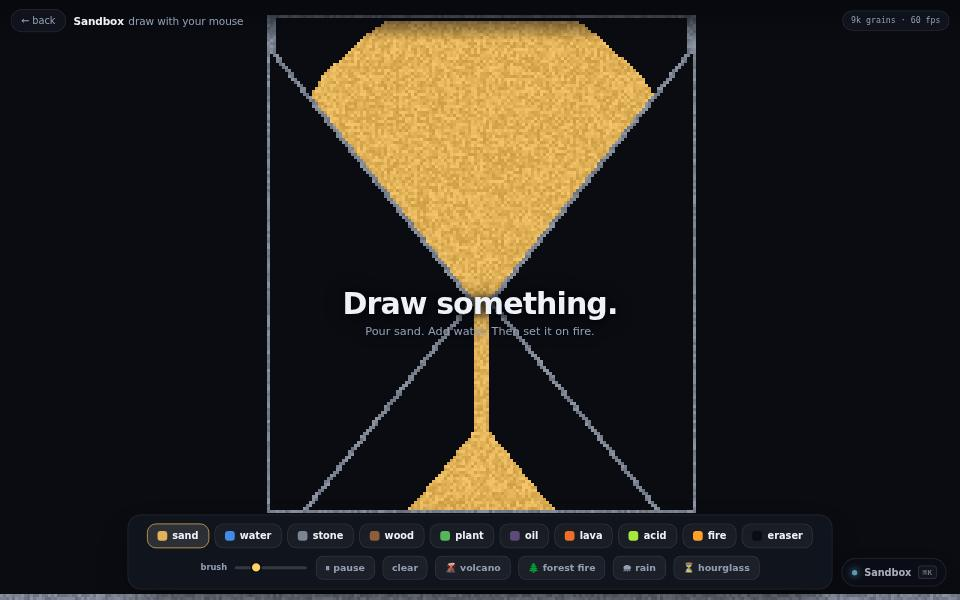

physics · about 5 min · The Workshop Shallows
Sandbox
Pour sand. Add water. Set it on fire and watch the smoke rise.

The problem
Ten materials that behave the way you expect, cheap enough to pour thousands of grains.
What it does
- Ten materials, including sand, water, fire and smoke
- Prepared scenes, or draw your own
- Fire that spreads through a tree’s canopy
The most interesting decision
Bottom-up, alternating
Cells update from the bottom up so nothing falls twice in one frame, and the scan direction flips every frame so nothing drifts consistently one way.
Built with
- Particle grid simulation
- Canvas 2D
Evidence
Pour sand, add water, set it on fire, and watch the smoke rise.
Its world
A hopper of sand pouring off the edge of the world, beside a small fire and a pool.